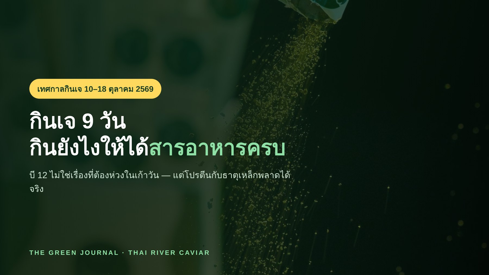

ภาพประกอบบทความ 10
assets/images/journal-10.jpg
กินเจ 2569 (10–18 ต.ค.) กินยังไงให้ได้สารอาหารครบ — โปรตีน ธาตุเหล็ก และวิตามินบี 12
กินเจ 9 วันไม่ทำให้ขาดวิตามินบี 12 เพราะตับเก็บสำรองไว้ได้นานเป็นปี สิ่งที่พลาดได้จริงคือโปรตีนกับธาตุเหล็ก พร้อมปฏิทิน 9 วัน ตารางโปรตีนในวัตถุดิบเจ วิธีเพิ่มการดูดซึมธาตุเหล็ก และแผนกิน 1 วันที่ทำตามได้จริง
อ่านต่อ